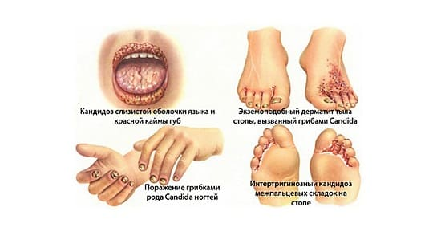
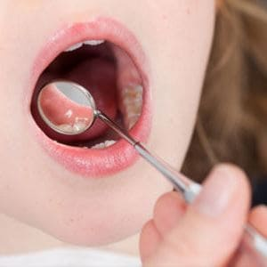

Кандидозы часто встречаются у младенцев и детей младшего возраста. Они обычно вызываются определенным видом грибка — Candida albicans. В этом разделе мы обсудим два основных типа кандидозов у детей — молочницу и кандидозные опрелости.
МОЛОЧНИЦА
Молочница — кандидоз рта и горла и чаще всего встречается у младенцев. Это объясняется тем, что грибку нравится теплая влажная среда, которая образуется при кормлении грудью или из бутылочки. Молочница проявляется в виде белых пятен или налета на языке, во рту, с внутренней стороны щек и даже на задней части горла. Налет имеет творожистую консистенцию. Если вы можете немного соскрести его, скорее всего, у вашего ребенка молочница. Она, как правило, не причиняет боли и не вызывает раздражения, за исключением тяжелых случаев.
СОВЕТ ДОКТОРОВ СИРС: КИПЯТИТЕ БУТЫЛОЧКУ! Если вы кормите ребенка из бутылочки, обязательно поддерживайте надлежащую гигиену. Соска на бутылочке является прекрасной средой для развития грибов кандида. Регулярно кипятите бутылочки и соски и промывайте их водой, чтобы предотвратить появление грибка. |
ЛЕЧЕНИЕ
В большинстве случаев молочница хорошо поддается лечению жидкими противогрибковыми препаратами. Небольшое количество их, как правило, выдавливают на внутренние стороны обеих щек 3—4 раза в день или в соответствии с рекомендациями врача.

МОЖЕТ ЛИ МОЛОЧНИЦА ПОВЛИЯТЬ
НА КОРМЛЕНИЕ ГРУДЬЮ?
Да. Она может передаться изо рта младенца на соски матери при кормлении грудью. Это приведет к покраснению, отеку и растрескиванию сосков, что может нарушить нормальный процесс кормления. Довольно часто младенцы и кормящие матери, непрерывно передают молочницу друг другу.
СОВЕТ ДОКТОРОВ СИРС: ЛЕЧИТЕ МОЛОЧНИЦУ ДОЛЬШЕ Если молочница вашего ребенка поддается лечению жидким противогрибковым препаратом, мы всегда советуем продолжать лечение еще минимум 2—3 дня после того, как молочница полностью исчезла. Некоторые родители прекращают лечение слишком рано, и молочница сразу же возвращается. |
Сталкиваясь со случаем, когда у ребенка молочница, «а его мать жалуется на раздраженные и опухшие соски, мы также лечим и мать. Мы рекомендуем нанесение противогрибковых мазей на соски после каждого кормления. Обязательно вытирайте все излишки мази перед кормлением, а после кормления наносите ее снова. Иногда матерям приходится принимать противогрибковые препараты перорально, чтобы избавиться от грибка на сосках, но это случается редко.
ДРУГИЕ ПРИЧИНЫ
Молочница, как правило, перестает быть проблемой после того, как ребенок проходит стадию кормления грудью и/или из бутылочки. Тем не менее дети старшего возраста также могут столкнуться с этой болезнью. Причины следующие:
СОВЕТ ДОКТОРОВ СИРС: БУДЬТЕ ОСТОРОЖНЫ ПРИ ПРИЕМЕ АНТИБИОТИКОВ Мы рекомендуем принимать пробиотики (такие как ацидофильные лактобактерии или бифидобактерии) во время курса антибиотиков. Это может предотвратить размножение грибка. |
СОВЕТ ДОКТОРОВ СИРС: КАК ОПРЕДЕЛИТЬ ГРИБОК Кандидозные опрелости заметно отличаются по внешнему виду от обычных негрибковых опрелостей. Кандидозные опрелости, как правило, более красные, отечные и воспаленные. Некоторые пятна даже могу потрескаться и кровоточить. Краснота, как правило, наблюдается в области лобка, гениталий и анального отверстия, и зачастую красные точки распространяются от основных пораженных участков. |
• Иммунодефицит. Дети с нарушениями иммунной системы, например при лейкемии или ВИЧ, более склонны к развитию грибковых инфекций. Это происходит потому, что организму тяжело бороться с размножением грибка.
КАНДИДОЗНЫЕ ОПРЕЛОСТИ
Это вторая по распространенности грибковая проблема, встречающаяся у младенцев.
ПРИЧИНЫ
Candida albicans, обычный виновник грибковой сыпи в области подгузников, любит влажную среду, образующуюся в детских подгузниках, а особенно влажные складки вокруг лобка, половых органов и анального отверстия ребенка. Мы часто встречаемся с классической «непроходящей сыпью в зоне подгузника». Практически у каждого ребенка в области подгузников появляется та или иная форма кандидозных опрелостей, и некоторые высыпания могут быть более серьезными, чем другие.
СОВЕТ ДОКТОРОВ СИРС: ОПРЕЛОСТИ Как и при молочнице, антибиотики могут привести к появлению кандидозных опрелостей. НЕ прекращайте курс антибиотиков, если у вашего ребенка появились кандидозные опрелости, если только ваш врач не рекомендовал иначе. Принимайте приведенные выше меры для лечения опрелостей. И опять же, если вы будете давать своему ребенку пробиотики (такие как ацидофильные лактобактерии или бифидобактерии) в то время, как он принимает антибиотики, это поможет предупредить появление кандидозных опрелостей. |
ЛЕЧЕНИЕ
Лечение зависит от того, насколько серьезна сыпь. Если сыпь средней степени, мы, как правило, рекомендуем применение безрецептурных противогрибковых мази или крема с клотримазолом. Наносите крем 3—4 раза в день. Также следует принимать описанные ниже меры:
Устойчивые кандидозные опрелости. Меры, описанные выше, как правило, помогают при умеренных кандидозных опрелостях. Тем не менее у младенцев и детей могут быть более тяжелые кандидозные опрелости, особенно, когда сыпь не лечили в течение нескольких недель. Если у вашего ребенка тяжелые кандидозные опрелости, ваш врач может выписать более сильные рецептурные противогрибковые мазь или крем. Обязательно следуйте рекомендациям своего врача и обратитесь к нему, если кандидозные опрелости усугубляются или снова появляются после проведения назначенного врачом лечения.
Здоровье ребенка от докторов Сирс / Сирс У. и др.